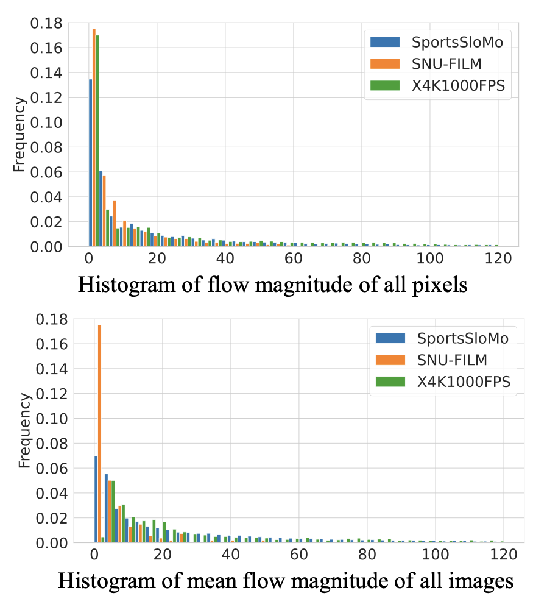
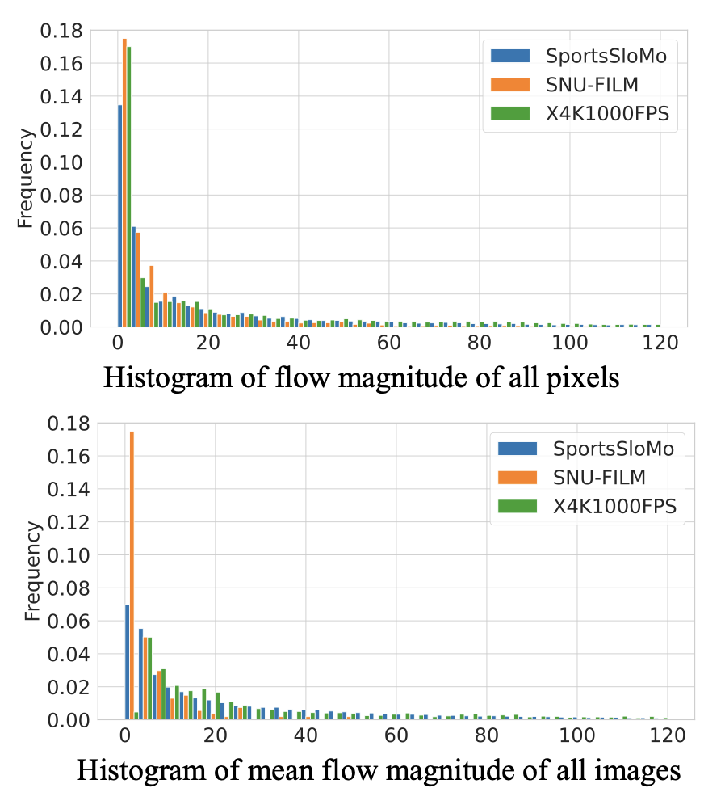
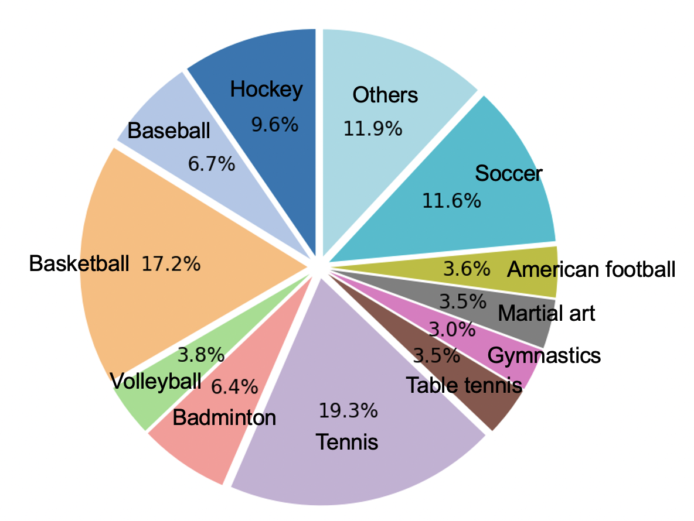

Flow Magnitude Distribution
As is shown by the histogram of flow magnitude, our proposed SportsSloMo dataset contains more large-displacement motion compared with widely-used VFI datasets.
Human-centric video frame interpolation has great potential for improving people's entertainment experiences and finding commercial applications in the sports analysis industry, e.g., synthesizing slow-motion videos. Although there are multiple benchmark datasets available in the community, none of them is dedicated for human-centric scenarios. To bridge this gap, we introduce SportsSloMo, a benchmark consisting of more than 130K video clips and 1M video frames of high-resolution (≥720p) slow-motion sports videos crawled from YouTube. We re-train several state-of-the-art methods on our benchmark, and the results show a decrease in their accuracy compared to other datasets. It highlights the difficulty of our benchmark and suggests that it poses significant challenges even for the best-performing methods, as human bodies are highly deformable and occlusions are frequent in sports videos. To improve the accuracy, we introduce two loss terms considering the human-aware priors, where we add auxiliary supervision to panoptic segmentation and human keypoints detection, respectively. The loss terms are model agnostic and can be easily plugged into any flow-based video frame interpolation approaches. Experimental results validate the effectiveness of our proposed loss terms, leading to strong baseline models on our benchmark.
Although various benchmarks are available for video frame interpolation, none of them is dedicated to human-centric scenarios. To bridge this gap and to foster the research in this important direction, we create a new dataset, SportsSloMo, focusing on high-resolution (≥720p) slow-motion sports videos crawled from YouTube under the Common Creative Licence. In total, our benchmark has 130K video clips and more than 1M video frames. Compared with other existing datasets, our proposed SportsSloMo benchmark is the largest one so far, with high resolution and focus on human-centric scenarios.
As is shown by the histogram of flow magnitude, our proposed SportsSloMo dataset contains more large-displacement motion compared with widely-used VFI datasets.
Our proposed SportsSloMo dataset covers 22 various sports categories with different content and motion patterns, including hockey, baseball, skating, basketball, running, volleyball, etc.
@InProceedings{Chen_2023_CVPR,
author = {Chen, Jiaben and Zhang, Renrui and Lian, Dongze and Yang, Jiaqi and Zeng, Ziyao and Shi, Jianbo},
title = {iQuery: Instruments As Queries for Audio-Visual Sound Separation},
booktitle = {Proceedings of the IEEE/CVF Conference on Computer Vision and Pattern Recognition (CVPR)},
month = {June},
year = {2023},
pages = {14675-14686}
}